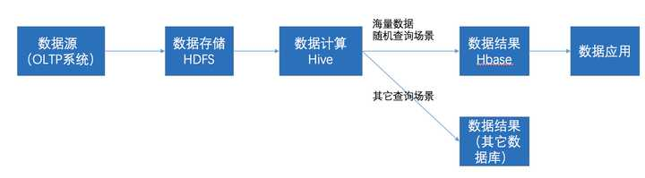

hadoop相关概念
Hadoop：是一个分布式计算的开源框架
HDFS：是Hadoop的三大核心组件之一
Hive：用户处理存储在HDFS中的数据，hive的意义就是把好写的hive的sql转换为复杂难写的map-reduce程序。
Hbase：是一款基于HDFS的数据库，是一种NoSQL数据库，主要适用于海量明细数据（十亿、百亿）的随机实时查询，如日志明细、交易清单、轨迹行为等。
Hive与HBase的区别与联系
区别：
Hive：Hive是基于Hadoop的一个数据仓库工具，可以将结构化的数据文件映射为一张数据库表，并提供简单的sql查询功能。
- Hive本身不存储和计算数据，它完全依赖于HDFS和MapReduce，Hive中的表纯逻辑。****hive需要用到hdfs存储文件，需要用到MapReduce计算框架。
- hive可以认为是map-reduce的一个包装。hive的意义就是把好写的hive的sql转换为复杂难写的map-reduce程序。
HBase：HBase是Hadoop的数据库，一个分布式、可扩展、大数据的存储。
- hbase是物理表，不是逻辑表，提供一个超大的内存hash表，搜索引擎通过它来存储索引，方便查询操作
- hbase可以认为是hdfs的一个包装。他的本质是数据存储，是个NoSql数据库；hbase部署于hdfs之上，并且克服了hdfs在随机读写方面的缺点。
联系：
Hbase和Hive在大数据架构中处在不同位置，Hbase主要解决实时数据查询问题，Hive主要解决数据处理和计算问题，一般是配合使用。
在大数据架构中，Hive和HBase是协作关系，数据流一般如下图：
- 通过ETL工具将数据源抽取到HDFS存储；
- 通过Hive清洗、处理和计算原始数据；
- HIve清洗处理后的结果，如果是面向海量数据随机查询场景的可存入Hbase
- 数据应用从HBase查询数据；
